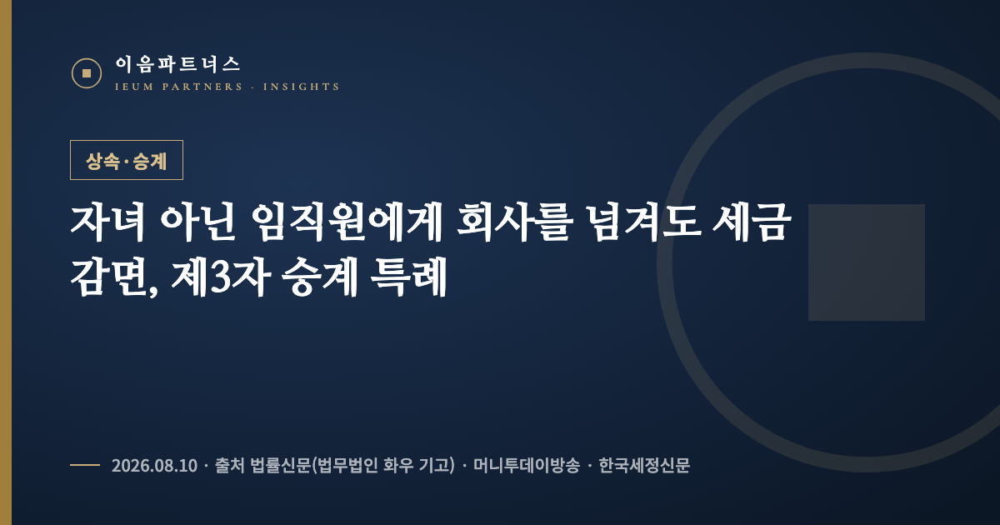

자녀 아닌 임직원에게 회사를 넘겨도 세금 감면, 제3자 승계 특례

자녀가 회사를 물려받을 생각이 없거나, 오래 함께한 임원에게 회사를 맡기고 싶은 대표님이 적지 않습니다. 정부의 2026년 세제개편안에는 이런 경우를 위한 '제3자 사업승계 과세특례'가 새로 담겼습니다. 이 글에서는 누가 어떤 혜택을 받는지, 요건과 받은 뒤 지켜야 할 점을 정리합니다.
지금까지 승계 세제 혜택은 주로 자녀 등 상속인에게 넘기는 경우에 맞춰져 있었습니다. 새 특례는 2028년부터 2030년까지 3년 동안 적용되는 한시 제도로 제안됐고, 국회 심사 결과에 따라 내용이 달라질 수 있습니다(머니투데이방송). 매각이나 임직원 승계를 고민 중이시라면 카카오톡 채널 이음파트너스에서 편하게 상의해 보셔도 됩니다.
누가 어떤 혜택을 받나
법률신문에 실린 해설은 이 특례가 상속인 외에 “제3자가 사업을 승계하는 경우에도 세제상 혜택을 주어 사업승계를 촉진”하기 위한 것이라고 설명합니다(법률신문). 파는 쪽과 사는 쪽 모두에게 세금 혜택이 있습니다.
| 구분 | 내용 |
|---|---|
| 파는 사람(매도자) | 주식이나 사업용 자산을 넘길 때 양도소득세 20% 감면, 한도는 경영연수 × 연 5천만 원 |
| 사는 사람(매수자) | 승계받은 사업장의 소득세·법인세를 5년간 10% 감면, 연 5억 원 한도 |
| 적용 기간 | 2028년 1월 1일 ~ 2030년 12월 31일 |
| 농어촌특별세 | 두 감면 모두 비과세 대상에 추가 |
예를 들어 30년 경영한 대표라면 양도소득세 감면 한도는 30 × 5천만 원, 곧 15억 원으로 계산됩니다. 이 한도는 다른 양도소득세 감면의 종합한도와 따로 적용됩니다.
요건은 무엇인가
넘기는 회사는 가업상속공제 대상 업종을 주된 사업으로 하는 중소기업이나 중견기업(3년 평균 매출액 5천억 원 미만)이어야 합니다. 파는 대표는 그 회사를 20년 이상 계속 경영한 60세 이상 최대주주(또는 최대출자자)여야 합니다.
사는 쪽은 두 경우 가운데 하나입니다. 같은 업종(한국표준산업분류 같은 대분류)의 회사를 10년 이상 경영한 개인이나 기업, 또는 그 회사에서 5년 이상 계속 근무한 임직원입니다. 어떤 형태의 승계를 인정하는지, 지분이나 자산을 얼마 이상 넘겨야 하는지는 시행령(대통령령)에서 정해질 예정입니다.
받은 뒤 지켜야 할 것
파는 대표가 5년 안에 넘긴 자산을 다시 사들이면 감면받은 세금과 이자상당액을 추징(돌려 내게 하는 것)합니다. 사는 쪽도 승계일부터 5년 안에 정당한 사유 없이 다음과 같은 일이 생기면 감면분을 다시 내야 합니다.
- 매수자의 주식·출자지분 감소
- 승계받은 사업용 자산의 40% 이상 처분
- 승계받은 사업장의 정규직 근로자 수와 총급여액 10% 이상 감소
- 1년 이상 휴업·폐업, 또는 매도자에게 다시 사업을 넘기는 경우
대표님이 지금 확인할 것
- 넘기려는 시점에 경영기간 20년, 나이 60세 요건을 채우는지
- 우리 업종이 가업상속공제 대상 업종에 들어가는지
- 승계 후보가 5년 이상 근무한 임직원이거나 같은 업종을 10년 이상 경영한 곳인지
- 승계 뒤 5년 동안 고용과 자산을 유지할 수 있는 계획인지
참고한 자료
- 가업상속공제 제도 개편 — 법률신문(법무법인 화우 기고) (2026.08.10)
- 가업상속공제 전면 재설계…제3자 승계시 세제지원도 [2026 세제개편] — 머니투데이방송 (2026.08.03)
- Ⅲ. 공정과세를 위한 조세개혁 추진-가업상속공제 개편(2026년 세제개편안) — 한국세정신문 (2026.08.05)
가족이 아닌 사람에게 회사를 넘기는 일은 세금뿐 아니라 지분 가치 평가와 고용 승계까지 함께 준비해야 합니다. 궁금한 점은 카카오톡 채널 이음파트너스로 문의해 주세요.
※ 이 글은 일반적인 정보 제공을 위한 것으로, 개별 사안은 세무사·노무사 등 전문가와 함께 확인하시기 바랍니다.